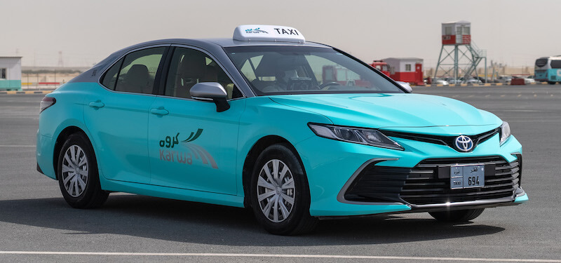

Karwa taxis offer a convenient and flexible way travel to and from Hamad International Airport. The taxi pavilion is located to the left of the arrivals hall. All taxis are metered and the minimum flag down fare at the airport starts at QAR 25 (USD 7), with cash payments in Qatari Riyal only. Transfer time to the city centre is 30 minutes on average. Customers can use the Uber or Careem or other types of taxis to travel to their desired stadium.
To know more, visit this website